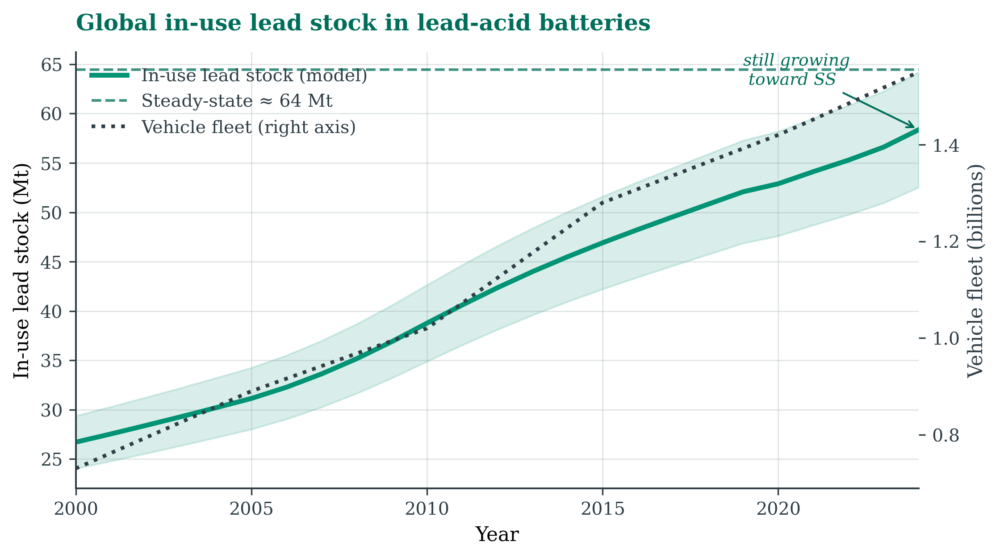
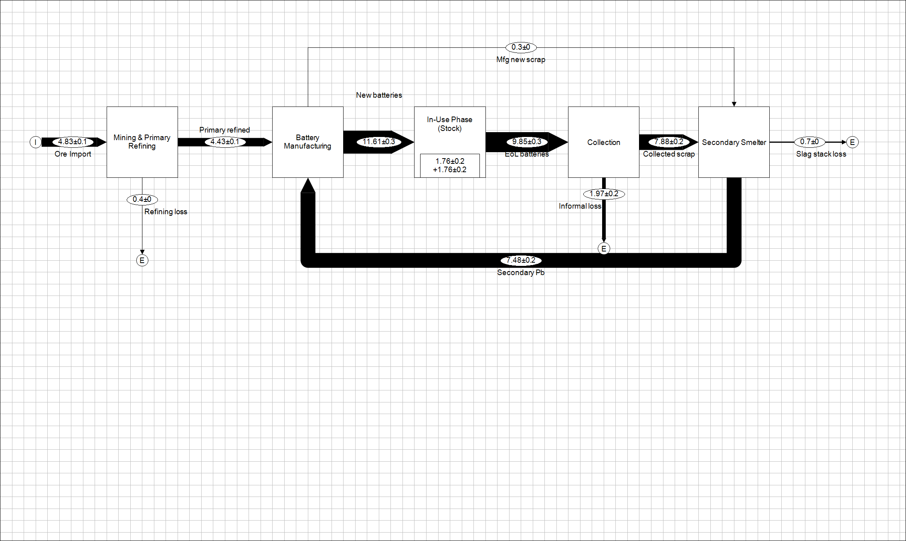
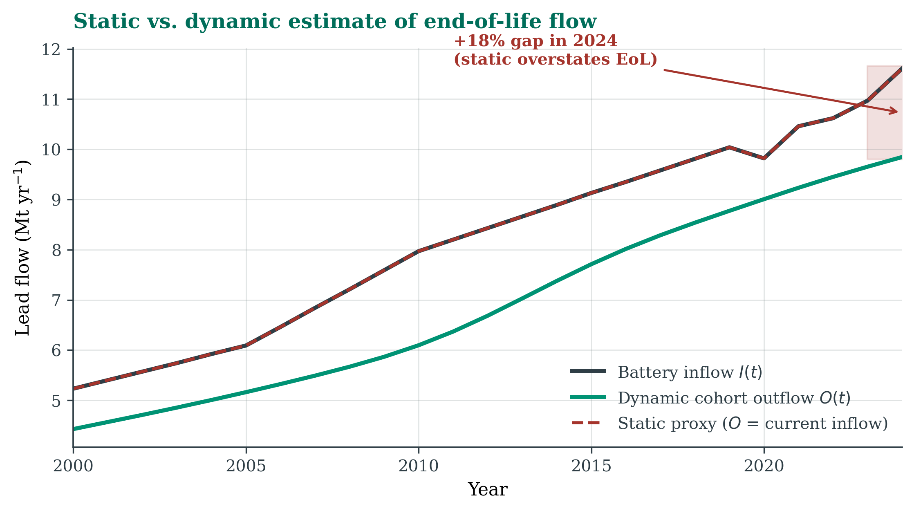
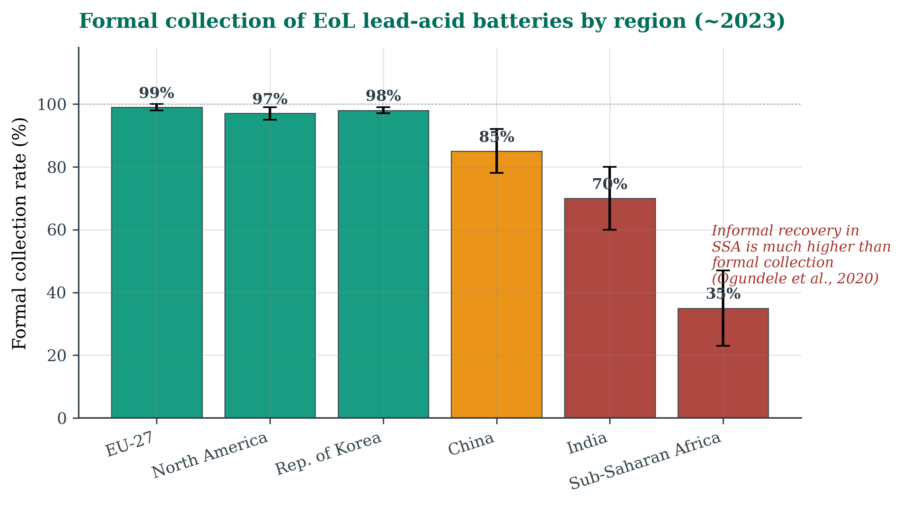
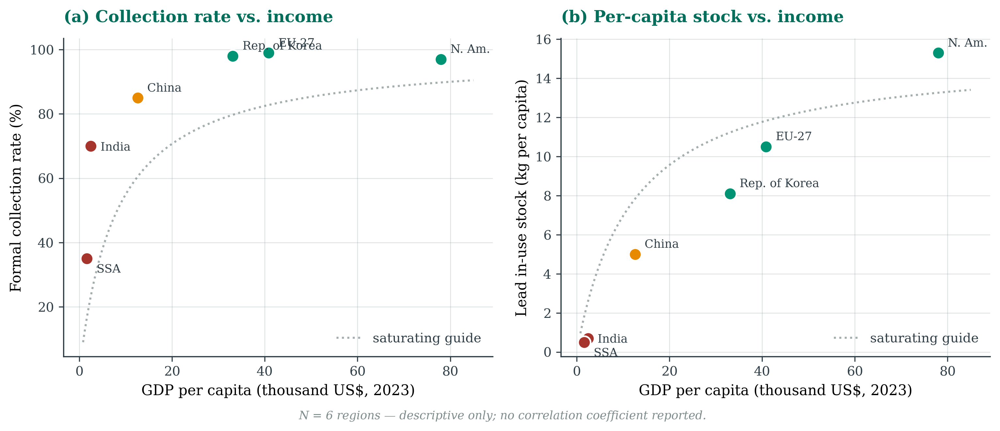
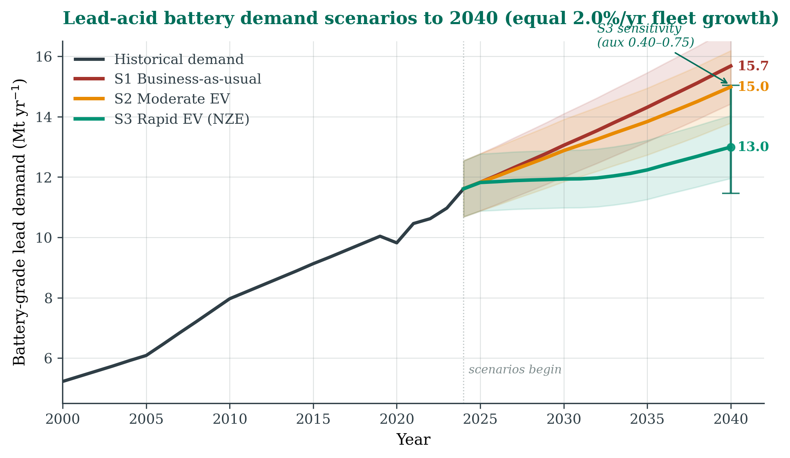

A 12-volt lead-acid battery powers nearly every conventionally fuelled car, bus and truck on the road, plus a growing share of e-bikes and stationary storage systems. With the global fleet estimated at ≈1.55 billion units (extrapolated from OICA, 2024) and most refined lead flowing into batteries (USGS, 2025; WHO, 2025), batteries dominate the human-made lead cycle.
Lead is at once a high-value circular-economy resource and a potent developmental neurotoxin with no identified safe exposure level, particularly for children (WHO, 2025). High-income regions run near-closed recovery loops, while informal recycling in several lower-income regions releases lead into soil, air and water.
Existing material flow analyses (MFAs) of lead are informative but partial. Mao et al. (2008) set out the multilevel-cycle framework for a single year; dynamic country-scale models have since been built for China (Liu et al., 2016; Hou et al., 2026), Korea (Jeong & Kim, 2018) and Nigeria (Ogundele et al., 2020), and the toolkit for dynamic metal MFA is mature (Müller et al., 2014). What has been missing is a globally aggregated, dynamic treatment of the battery cycle that couples historical reconstruction with forward-looking EV scenarios, drawing on the scenario logic used for future vehicle-material demand (Maisel et al., 2023; Pauliuk et al., 2021). That is what this study adds.
How has lead flowed through the global lead-acid battery lifecycle between 2000 and 2025, and what does it mean for resource efficiency, environmental risk and circular-economy policy as EVs spread to 2040?
Lead: properties, occurrence and uses
Lead (Pb, atomic number 82) is dense (11.3 g/cm³), soft, corrosion-resistant and melts at 327 °C: cheap to cast and cheap to remelt. Its electrochemistry with sulfuric acid, the Gaston Planté cell of 1859, gives about 2 V per cell, so a six-cell 12-V starter battery contains 8–18 kg of lead (mean ≈12 kg; ILA, 2024). Low cell voltage, high-current tolerance, robustness under vibration and a mature, low-cost recycling route explain why lead-acid batteries still dominate the automotive starter market despite lithium-ion’s higher energy density.
Lead averages ≈14 ppm of the Earth’s crust, the 36th most abundant element, and is mined chiefly as galena (PbS) at ore grades of 2–8%. Identified world resources exceed 2 billion tonnes and reserves are ≈90–100 Mt (USGS, 2025), so geological scarcity is not binding. Ashby’s static reserve index (reserves over primary mine production, since recycled lead does not draw on reserves) gives ≈96 Mt / 4.83 Mt per year ≈ 20 years; allowing for 3% demand growth, the dynamic index is ≈16.5 years (Ashby, 2009). Both are conservative because recycled lead already dominates supply. China accounts for roughly two-fifths of world mine output (USGS, 2025).
Batteries take about 85% of all lead, with automotive starter (SLI) batteries the largest single segment, followed by industrial and stationary systems (backup power, telecom, motive power) and the fast-growing e-bike segment. The study groups all batteries together because recycling statistics do not cleanly separate automotive from industrial scrap, and virtually all recycled lead comes from spent batteries.
| Application | Share of global lead use | 2024 volume (Mt/yr) |
|---|---|---|
| Automotive SLI batteries | ≈63% | ≈8.5 |
| Industrial / stationary batteries | ≈14% | ≈1.9 |
| E-bike / micromobility batteries | ≈8% | ≈1.1 |
| Radiation shielding | ≈3% | ≈0.4 |
| Ammunition, cable, alloys, other | ≈12% | ≈1.6 |
Table 1: Global lead consumption by end use, 2024, for ≈13.5 Mt of total refined lead. Compiled from USGS (2025), ILA (2024) and WHO (2025).
Methods
A dynamic material flow model
Material flow analysis tracks flows and stocks of a material using conservation of mass (Brunner & Rechberger, 2016). A static MFA is a single-year snapshot; a dynamic MFA follows every variable over time, so it captures the build-up of stock in use and the delayed release of end-of-life (EoL) batteries (Müller et al., 2014). Each year’s retirements are derived from earlier sales through a lifetime distribution:
O(t) = Σ I(t′) · f(t − t′) S(t) = S(t − 1) + I(t) − O(t)
Here I is the inflow of new batteries, O the outflow of spent ones, S the stock in use and f the probability that a battery retires at a given age. Collection and smelting follow as transfer coefficients: collected scrap is a share of the outflow, and recycled lead a share of what is collected. A manufacturing scrap loop (≈2.5% of gross input) returns trimmings to the smelter. The model starts in 1990 with zero stock. The lifetime approach is preferred over a constant-rate (“leaching”) approach because starter and traction batteries fail within a defined age window rather than at random. The dynamic model runs in Python; the 2024 slice is built in STAN (Cencic & Rechberger, 2008) with data reconciliation as an independent cross-check.
Static versus dynamic, and the system boundary
A central question is how much error a static assumption introduces for a growing stock. Two estimates of 2024 end-of-life flow are compared: a static proxy that assumes today’s retirements equal today’s sales, and the dynamic estimate, in which today’s retirements come from the smaller sales of about five years earlier. Because sales have grown, the static proxy overstates current EoL by (1 + g)L − 1, where g is the sales growth rate and L the mean lifetime.
The system has five processes (mining and refining, manufacturing, use, collection and secondary smelting) connected by ten flows and three losses (tailings, informal recycling or landfill, and slag). Regional detail for the EU-27, North America, Korea, China, India and Sub-Saharan Africa is used for the recycling analysis. Data come from USGS Mineral Commodity Summaries, ILZSG and ILA statistics, EU Regulation 2023/1542, Basel Convention guidelines and peer-reviewed regional MFAs.
Battery lifetimes and scenarios
Lifetimes follow a Weibull distribution (k = 3.5, λ = 6.1 years) with a share-weighted mean of 5.5 years: starter batteries 5.07 years (74% of the mix), industrial batteries 9 years (16%) and micromobility 3.3 years (10%). This corrects the common practice of applying a starter-only lifespan to the whole stock; industrial batteries live much longer and dominate their part of the standing stock. The distribution reproduces the mean and skew of the profiles fitted by Hou et al. (2026), but it is an approximation, and a single global distribution flattens regional differences.
Three scenarios to 2040 differ only in the EV share of new car sales, with fleet growth held at 2.0% per year in all of them so that the EV effect is isolated:
- S1, business as usual: 30% EV share by 2040
- S2, moderate EV: 45%
- S3, rapid EV (aligned with the IEA Net Zero pathway): 90% (IEA, 2024)
Automotive lead is split into a new-vehicle component (≈1/3, driven by the EV share of new sales) and a replacement component (≈2/3, driven by the EV share of the fleet, which lags by about five years). All scenarios keep a 12-V auxiliary lead battery in most EVs (about 0.55× the mass of a starter battery, sensitivity 0.40–0.75) and include growth in stationary storage.
Results
Recycled lead overtook mined lead
Primary mine output rose from ≈3.1 Mt in 2000 to a peak of ≈5.4 Mt in 2013, then eased to ≈4.8 Mt by 2024 as ore grades declined (USGS, 2025; Mudd, 2010). Secondary production climbed from ≈3.4 Mt to ≈8.9 Mt, overtaking primary output well before 2010, and now supplies about two-thirds of refined lead worldwide (ILA, 2024). This mirrors national findings for China, where recycled lead reached about half of refined output by 2022 (Hou et al., 2026), and Korea, where secondary already exceeded primary in the mid-2010s (Jeong & Kim, 2018).

A large and still-growing stock in use
The modelled stock of lead in use grew from ≈19 Mt in 2000 to about 58 Mt in 2024, and is still growing toward a steady state of ≈64 Mt. Because each segment has its own lifetime, the steady state breaks down transparently: industrial batteries make up only 16% of inflow but about 27% of the standing stock, because they live nearly twice as long as starter batteries. At the blended 5.5-year mean life, the stock turns over roughly every five years: collection infrastructure, not geology, limits supply.
| Segment | 2024 inflow (Mt) | Mean life (yr) | Steady-state stock (Mt) |
|---|---|---|---|
| Automotive SLI (74%) | 8.60 | 5.07 | 43.6 |
| Industrial / stationary (16%) | 1.91 | 9.00 | 17.2 |
| Micromobility (10%) | 1.10 | 3.30 | 3.6 |
| Total | 11.61 | 5.51 (weighted) | 64.4 |
Table 2: Segment breakdown of the lead stock in use.

The 2024 mass balance
Manufacturing takes in ≈11.9 Mt of lead (4.43 Mt primary, 7.48 Mt recycled and 0.30 Mt of its own scrap) and delivers 11.6 Mt of new batteries. Because the stock is still growing, the end-of-life flow (≈9.85 Mt) is smaller than the inflow by the net stock addition of ≈1.76 Mt per year. Of the end-of-life lead, 7.88 Mt is formally collected (an 80% blended rate) and 1.97 Mt is lost to informal recycling and landfill. Smelters recover 7.48 Mt at 91%, losing 0.70 Mt as slag, and mining loses ≈0.40 Mt to tailings. Every node balances by construction; only the informal loss is a residual.

Why a snapshot gets end-of-life wrong
The dynamic model gives a 2024 end-of-life flow of 9.85 Mt; the static proxy gives 11.61 Mt, an overstatement of ≈18%. The gap matches (1 + g)L − 1 with g ≈ 2.9% per year and L ≈ 5.5 years (predicted: 17%). This is the concrete cost of ignoring stock dynamics in a growing fleet: a snapshot balance sets today’s collection targets against the wrong denominator.

Recycling is starkly unequal between regions
Formal collection reaches ≈99% in the EU-27, backed by the take-back mandate of Regulation (EU) 2023/1542, and ≈97% in North America through deposit-return systems. Korea runs a near-closed loop under extended producer responsibility, re-refining about 98.2% of the lead in collected batteries (Jeong & Kim, 2018). China (≈85%, author estimate) has formalised rapidly since its 2016 hazardous-waste rules, yet parallel informal networks persist (Hou et al., 2026). India (≈70%) and Sub-Saharan Africa (≈35%) show the largest gaps: in Nigeria, most spent batteries are ultimately recycled through informal small-scale smelters, so high nominal recovery coexists with severe uncontrolled emissions (Ogundele et al., 2020).

Set against income, formal collection rises steeply with GDP per capita and saturates near 100% above about US$30,000 per person. The lead stock per person shows the same saturating shape, from under 1 kg in low-income regions to ≈10–15 kg in high-income ones, the same profile seen for other bulk materials (Pauliuk et al., 2021). With only six regions, these relationships are shown descriptively, without a correlation coefficient.

Discussion
A fifth of the flow, most of the harm
Lead has no identified safe exposure threshold. The WHO attributes more than 3.5 million deaths and 71.5 million disability-adjusted life years to lead exposure (2023 GBD; WHO, 2025). Larsen & Sánchez-Triana (2023) put the 2019 cardiovascular death toll alone at ≈5.5 million using a broader method; the two figures reflect different reference years and definitions rather than a contradiction.
The main exposure routes are dust from informal battery breaking, emissions from unregulated smelters and acid run-off. Modern smelters meeting EU Best Available Techniques emit orders of magnitude less per tonne, so moving informal capacity into controlled facilities would deliver outsized health benefits (Tian et al., 2017).
Electrification does not end lead demand
Recycled lead needs roughly a third to a half of the energy of primary lead (Tian et al., 2017; ILA, 2024). The ≈58 Mt stock in use is a large, fast-cycling and highly recyclable urban mine, so the biggest gain lies in extending formal collection to the ≈20% of spent batteries that currently escape it, not in squeezing more out of smelters that are already near-optimal.
Demand keeps rising in every scenario. Business as usual reaches ≈15.7 Mt by 2040 and the moderate scenario ≈15.0 Mt. Even with a 90% EV share of new sales, demand only falls to ≈13.0 Mt (11.8–14.5 Mt across the auxiliary-battery range), a reduction of about a sixth. There are three reasons: most EVs keep a 12-V lead auxiliary battery; the fleet keeps growing whatever the powertrain; and replacement demand follows the slowly turning fleet rather than new sales. Electrification swaps one battery-material system for another, mirrored by sharply rising lithium, nickel and cobalt demand (Maisel et al., 2023), so lead recycling stays relevant throughout the energy transition.

| Scenario | EV share of new sales by 2040 | Lead demand 2040 (Mt/yr) |
|---|---|---|
| S1 Business as usual | ≈30% | ≈15.7 |
| S2 Moderate EV | ≈45% | ≈15.0 |
| S3 Rapid EV (IEA Net Zero) | ≈90% | ≈13.0 (range 11.8–14.5) |
Table 3: Scenarios for 2040. Differences come only from the EV share, applied separately to new sales and to replacements.
Supply risks
Lead is not on the EU Critical Raw Materials list, but two structural risks matter. About 40% of primary mine output comes from China (USGS, 2025), a dependence cushioned by the dominance of recycled supply. And ore grades at mature deposits have declined for decades (Mudd, 2010), raising the energy needed per tonne of primary lead. Both point the same way: collection policy, not mine capacity, is the real supply-security lever for lead.
Limitations
The blended lifetime distribution is anchored to Chinese survey data (Hou et al., 2026), and the 9-year industrial battery life is an industry estimate; shorter lifetimes in hot climates would bring end-of-life forward exactly where collection is weakest. No systematic global survey of informal recycling exists, and high recovery rates can mask uncontrolled emissions. The 1.55-billion vehicle fleet is extrapolated from OICA’s 2020 baseline, the 0.55 auxiliary factor is the midpoint of a 0.40–0.75 range, and automotive demand is split only coarsely into new vehicles and replacements. A fuller model would trace each vintage separately, propagate uncertainty with Monte Carlo simulation (Müller et al., 2014) and add a toxicity-impact module.
Conclusion
Recycled lead has supplied most refined output for over a decade and covered about two-thirds of battery-grade lead in 2024. The stock in use is ≈58 Mt and still growing toward ≈64 Mt, with industrial batteries holding ≈27% of it from just 16% of inflow. A static single-year balance overstates the 2024 end-of-life flow by ≈18%, exactly as (1 + g)L − 1 predicts, which is why a snapshot cannot answer a question about the future. Recycling is starkly unequal, and the ≈2.0 Mt per year that escapes formal collection causes disproportionate harm in low-income regions. Even Net-Zero-aligned electrification only lowers 2040 demand from 15.7 to 13.0 Mt.
Lead is not scarce in the ground; it is scarce in the collection bin.
Even 99% collection cannot outpace 3% annual fleet growth over a 5.5-year mean life. The highest-leverage interventions are therefore extending formal collection to under-served regions, enforcing emission standards at secondary smelters, and curbing the cross-border leakage of used batteries.
References
- Ashby, M. F. (2009). Materials and the Environment: Eco-informed Material Choice. Butterworth-Heinemann.
- Brunner, P. H., & Rechberger, H. (2016). Handbook of Material Flow Analysis (2nd ed.). CRC Press. doi:10.1201/9781315313450
- Cencic, O., & Rechberger, H. (2008). Material Flow Analysis with Software STAN. Journal of Environmental Engineering and Management, 18(1), 3–7.
- European Union. (2023). Regulation (EU) 2023/1542 on batteries and waste batteries. eur-lex.europa.eu
- Hou, H., Wei, W., Zhang, S., Zhu, S., Di, Z., Cheng, F., Xu, H., & Liu, J. (2026). Quantitative assessment of the resource recovery potential from end-of-life lead-acid batteries: A case study from China. Environmental Impact Assessment Review, 120, 108450. doi:10.1016/j.eiar.2026.108450
- International Energy Agency (IEA). (2024). Global EV Outlook 2024. IEA, Paris.
- International Lead Association (ILA). (2024). Lead recycling and sustainability. ila-lead.org
- International Lead and Zinc Study Group (ILZSG). (2024). World lead statistics. ilzsg.org
- Jeong, K.-P., & Kim, J. G. (2018). Lead acid battery recycling and material flow analysis of lead in Korea. Journal of Material Cycles and Waste Management, 20, 1348–1354. doi:10.1007/s10163-017-0649-6
- Larsen, B., & Sánchez-Triana, E. (2023). Global health burden and cost of lead exposure. The Lancet Planetary Health, 7(10), e831–e840.
- Liu, W., Chen, L., & Tian, J. (2016). Uncovering the evolution of lead in-use stocks in lead-acid batteries in China. Environmental Science & Technology, 50(10), 5412–5419.
- Maisel, F., Neef, C., Marscheider-Weidemann, F., & Nissen, N. F. (2023). A forecast on future raw material demand and recycling potential of lithium-ion batteries. Resources, Conservation & Recycling, 192, 106920.
- Mao, J. S., Dong, J., & Graedel, T. E. (2008). The multilevel cycle of anthropogenic lead: I. Methodology. Resources, Conservation and Recycling, 52(8–9), 1058–1064.
- Mudd, G. M. (2010). The environmental sustainability of mining in Australia. Resources Policy, 35(2), 98–115.
- Müller, E., Hilty, L. M., Widmer, R., Schluep, M., & Faulstich, M. (2014). Modeling Metal Stocks and Flows: A Review of Dynamic MFA Methods. Environmental Science & Technology, 48(4), 2102–2113.
- Ogundele, D., Ogundiran, M. B., Babayemi, J. O., & Jha, M. K. (2020). Material and Substance Flow Analysis of Used Lead Acid Batteries in Nigeria. Journal of Health & Pollution, 10(27), 200913.
- OICA. (2024). World vehicles in use. Organisation Internationale des Constructeurs d’Automobiles.
- Pauliuk, S., Heeren, N., Berrill, P., Fishman, T., Nistad, A., Tu, Q., Wolfram, P., & Hertwich, E. G. (2021). Global scenarios of resource and emission savings from material efficiency. Nature Communications, 12, 5097.
- Tian, X., Gong, Y., Wu, Y., Agyeiwaa, A., & Zuo, T. (2017). Environmental impact and economic assessment of secondary lead production. Journal of Cleaner Production, 144, 142–148.
- UNEP / Secretariat of the Basel Convention. (2003). Technical Guidelines for the Environmentally Sound Management of Waste Lead-Acid Batteries.
- U.S. Geological Survey. (2025). Mineral Commodity Summaries 2025: Lead. USGS, Reston, VA.
- World Bank. (2024). World Development Indicators: GDP per capita.
- World Health Organization. (2025). Lead poisoning fact sheet.